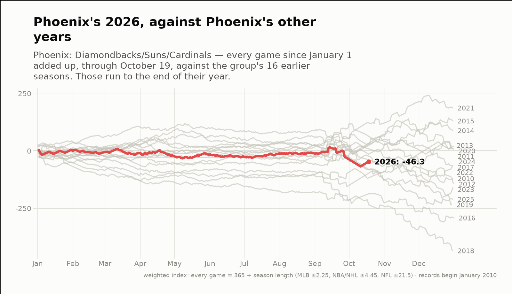
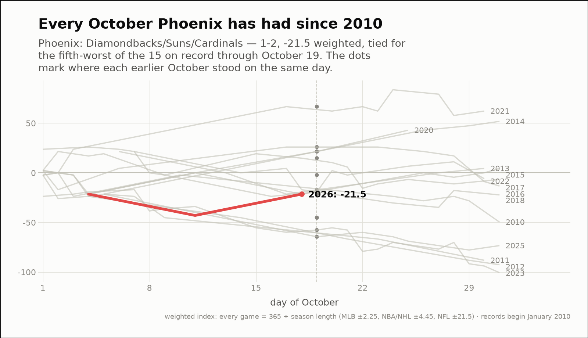
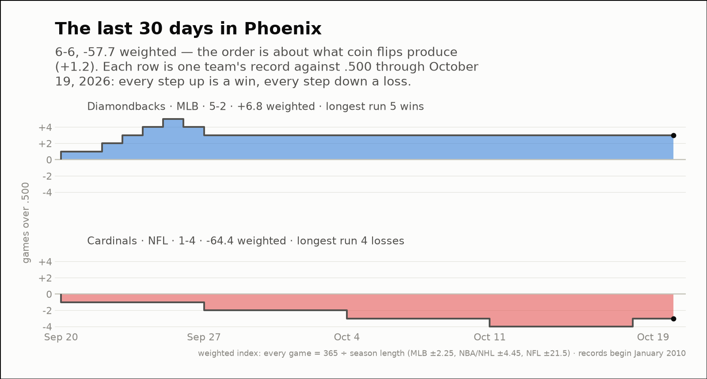

City of the day — Phoenix
Phoenix: Diamondbacks/Suns/Cardinals
- 2026 so far
- 115-109, -46.3 weighted over 224 games; longest run 5 straight losses
- Order of results
- about as clumped as coin flips (-0.5)
- Earlier seasons (full-year weighted)
- 2010 -120.8, 2011 +8.9, 2012 -143.0, 2013 +23.6, 2014 +87.8, 2015 +130.0, 2016 -292.1, 2017 -62.5, 2018 -435.0, 2019 -229.6, 2020 +21.2, 2021 +186.7, 2022 -65.3, 2023 -158.8, 2024 +7.2, 2025 -211.1
- Last 30 days
- 6-6, -57.7 weighted; longest run 5 straight losses
- Window opens
- September 20, 2026
- October 2026 through day 19
- 1-2, -21.5 weighted — tied for the fifth-worst of the 15 on record
- Same October in earlier years (same stretch)
- 2010 -2.3, 2011 -45.2, 2012 -45.2, 2013 -21.5, 2014 +21.5, 2015 -21.5, 2016 +26.0, 2017 +14.8, 2018 -17.0, 2020 +21.5, 2021 +66.7, 2022 -19.3, 2023 -57.7, 2025 -64.4
| Team | Last 30 days | Weighted | Longest run |
|---|---|---|---|
| Diamondbacks | 5-2 | +6.8 | 5 straight wins |
| Cardinals | 1-4 | -64.4 | 4 straight losses |


